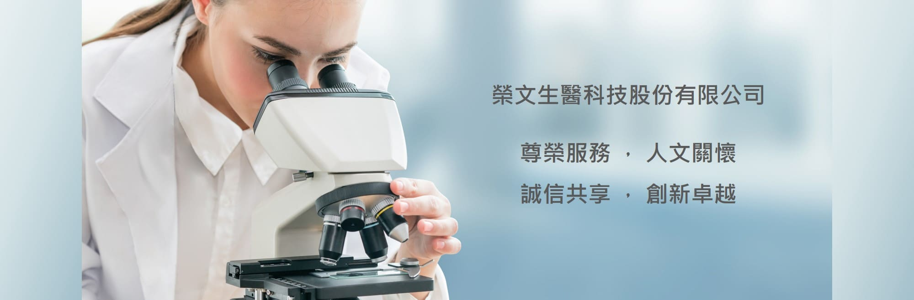

2017
品牌成立並展開精準醫學服務布局
榮文生醫成立於 2017 年，由對臨床檢驗與生物醫學發展有熱忱的夥伴組成。我們以平實的價格要求高品質的臨床檢測項目，並持續提供循環腫瘤細胞檢測、合作抽血據點與健康管理相關資訊。
占地一百坪的精準醫學實驗室整合檢測流程、報告交付與合作支援，協助醫療院所、研究團隊與一般使用者更快找到所需入口。

首頁聚焦檢測服務、技術原理、據點查詢、健康產品與最新消息，讓使用者更容易銜接下一步。
榮文生醫透過 Chiline CATCH 系統將樣本處理、細胞分離、染色與影像判讀整合成更穩定的檢測流程，協助醫師及臨床研究人員追蹤癌症病患的循環腫瘤細胞。

人類全血，K2-EDTA 紫頭採血管，前 3mL 拋棄，4℃ 冷藏並於 24 小時內上機。
2 至 5 個工作天提供影像、數值、癌症風險評估與歷史檢測數值分析。